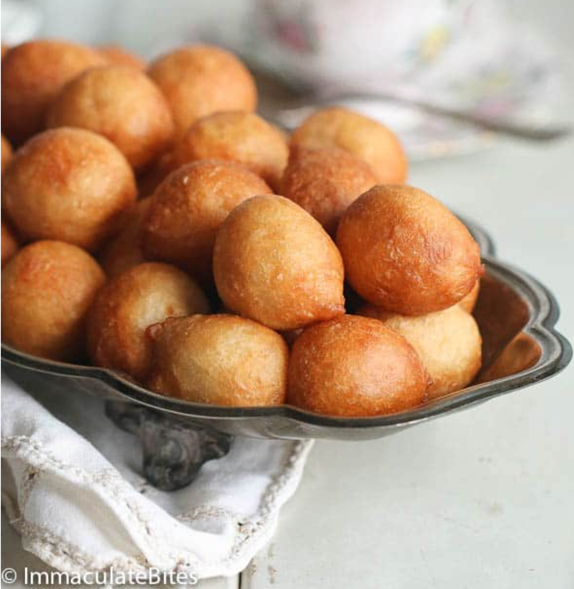

Home
Nigerian Pof-Pof

Right, so: imagine a donut, but softer, bite-sized, and perfect when straight out of the frier.
That's Pof-Pof, a Nigerian fried pastry dessert/snack/breakfast food made of flour, sugar, and yeast.
It's a bit of a long process, but not very difficult at all! Just use my handy-dandy instructions below.
There is a waiting period of 1-2 hours! Keep that in mind. You can also raise the dough overnight to avoid the boring part.
Ingredients
For this delectable snack, we'll need:
- 7g Active Yeast
- 420g Plain Flour
- 475ml Warm Water
- 100g Sugar
- 9g Salt
- Oil for deep-frying
- Optional: Nutella
- Optional: Icing Sugar
Method
- Mix your salt, water, sugar, and yeast together. Set aside for 5 minutes. The warm water will activate the yeast
- Add the flour and mix. Now you have dough! Cover & put in a warm place. Let this rise for 1-2 hours. Sorry.
- Heat the oil, deep enough for a deep fry!
- Sprinkle some flour into the oil to test if it's hot enough. If the flour sizzles, we're ready to go!
- (CAREFULLY!) drop a tablespoon full of batter into the hot oil. Keep doing this until the sauce pan is 3/4 full.
- Once the balls solidify & turn a little golden on the side in the oil, USE A SPOON(!!!!) to flip them over.
- Once the other side is golden, take it out! And you're DONE!
- If you'd like, sprinkle icing sugar on all of them, and put aside a bowl of nutella to dip them in.
Job's a goodun. Your pof-pof is ready to eat, and is best served fresh from the frier. Blooming delicious, mate.